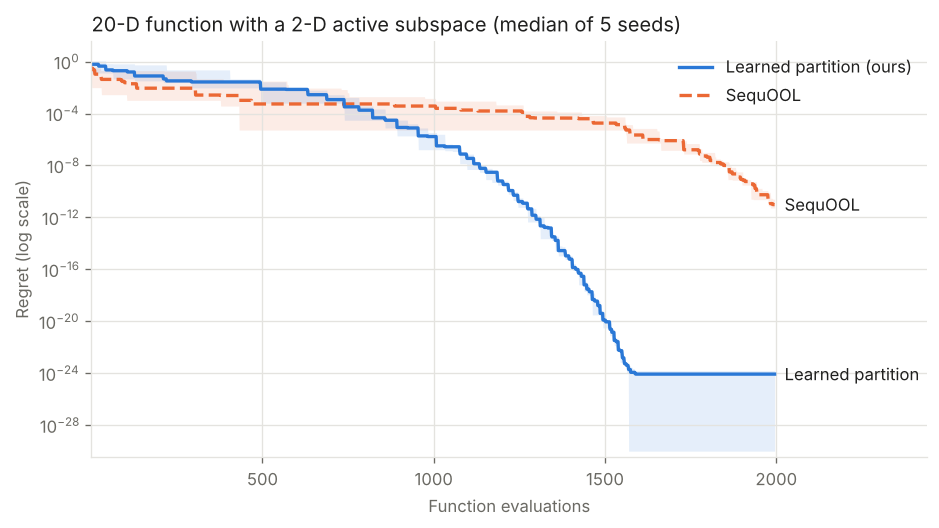

Adaptive Partitioning Schemes for Optimistic Optimization
Both panels are real SequOOL runs with the same 57 evaluations on f(x) = −|a·x − c|, whose maximizers lie on the dashed line. Darker cells are the most refined. The axis-aligned run ends 2×10−4 from the optimum; the learned one reaches it to machine precision.
Many expensive black-box functions in many dimensions really depend on only a few directions. Optimistic optimizers such as DiRect, SOO and SequOOL search by splitting the domain into boxes along the coordinate axes, so most of their splits go to directions the function ignores. We learn those directions from a few evaluations, then let SequOOL split in them.
How it works
- Learn the directions. Fit a small neural network to random evaluations (or estimate gradients by finite differences) and take the top singular directions. This gives an estimate  of the m-dimensional subspace that f varies in.
- Build the partition in that subspace. Cells are boxes in the coordinates z = Âx, large enough to contain the optimum even when  is slightly off.
- Run SequOOL on it. Trisect cells along one learned direction per depth and open the best cells at each depth, as usual.
For multi-index functions f(x) = g(Ax) with an m-dimensional subspace in d dimensions, regret improves from Õ(n−1/η) for SequOOL to Õ(n−β/η) with β = 1 + (d − m)/(2m − 1), and the guarantee holds with an estimated subspace.
What it looks like in practice

The gain is largest when the hidden function is well-behaved near its optimum. On the same setup, the demo also reports where it does not help:
| Hidden 2-D function | Learned partition vs. SequOOL, 5 rotations |
|---|---|
| Sharp bowl, |z|1.5 | Better on 5 of 5; median 8.5×10−25 vs 9.7×10−12 |
| Sphere | Better on 5 of 5; median 3.1×10−33 vs 1.0×10−15 |
| Rastrigin, many local minima | Worse on 4 of 5; often settles in a neighboring minimum |
| Rosenbrock, curved valley | Mixed, better on 2 of 5 |
The paper also applies the method to activation-aware weight quantization of OPT-1.3B, posed as a 72-dimensional black-box problem.
Use it
pip install "git+https://github.com/raja-sunkara/Learned-Partitions-SequOOL.git#subdirectory=package"from learned_partitions import minimize
res = minimize(f, bounds=[(-1, 1)] * 50, budget=1000)
res.x, res.fun, res.m # best point, value, subspace dimOnly numpy and scipy are required. The repository also has the code for every experiment in the paper.
Citation
@InProceedings{pmlr-v267-sunkara25a,
title = {Adaptive Partitioning Schemes for Optimistic Optimization},
author = {Sunkara, Raja and Tripathy, Ardhendu},
booktitle = {Proceedings of the 42nd International Conference on Machine Learning},
pages = {58029--58064},
year = {2025},
volume = {267},
series = {Proceedings of Machine Learning Research},
publisher = {PMLR},
url = {https://proceedings.mlr.press/v267/sunkara25a.html}
}